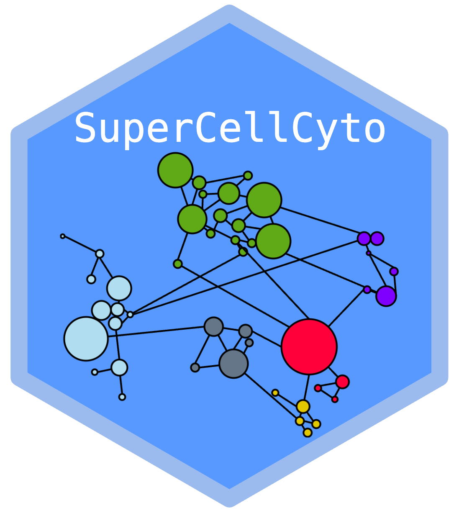

SuperCellCyto is an extension of the SuperCell R package. Initially developed for scRNAseq data, SuperCell aggregates cells with similar transcriptomic profiles into “supercells” (also known as “metacells” in the scRNAseq literature).
In SuperCellCyto, we’ve tailored the SuperCell package to specifically cater to cytometry data:
- Supercells are now aggregating cells that are similar marker expressions.
- Supercells are now created for each individual sample. This adaptation ensures that each supercell encompasses cells from exclusively one sample. By processing each sample independently, we prevent the intermixing of cells from different samples within supercells.
- Multiple samples can now be processed in parallel with a custom load
- balancing strategy. This enhancement enables simultaneous generation of supercells for multiple samples, significantly reducing the computational time required for processing large datasets.
Please report any issues you encounter.
Installation
You can install the stable version of SuperCellCyto from Bioconductor:
# Install BiocManager if you haven't already
if (!requireNamespace("BiocManager", quietly = TRUE))
install.packages("BiocManager")
# Install SuperCellCyto from Bioconductor
BiocManager::install("SuperCellCyto")Or, you can install the development version of SuperCellCyto from GitHub:
if (!requireNamespace("pak", quietly = TRUE))
install.packages("pak")
# Install SuperCellCyto from GitHub
pak::pak("phipsonlab/SuperCellCyto")Getting Started
The best way to get started with SuperCellCyto is to explore the package’s vignettes and articles (available at https://phipsonlab.github.io/SuperCellCyto/).
Changelog
For a list of recent changes, please see the NEWS.md file.
Citation
@article{putri2024supercellcyto,
title={SuperCellCyto: enabling efficient analysis of large scale cytometry datasets},
author={Putri, Givanna H and Howitt, George and Marsh-Wakefield, Felix and Ashhurst, Thomas M and Phipson, Belinda},
journal={Genome Biology},
volume={25},
number={1},
pages={89},
year={2024},
publisher={Springer}
}Code of Conduct
Please note that the SuperCellCyto project is released with a Contributor Code of Conduct. By contributing to this project, you agree to abide by its terms.
Contribution guide
Please visit Contributing Guide